Making Characters
When starting the project, I wanted to try to learn as many new things as I could.
I started to teach myself Blender as it is open-source and free.
I hadn't done any character modeling before, let alone character animation, so it was a great challenge!
Another challenging part of the project was the art style of the game.
We wanted to try to replicate the look of older 3D platforming games.
Below you can see the multiple versions and progress of the main character of BintuWronged.
Evolution of Benson the Binturong
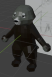
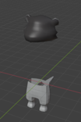
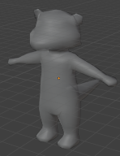
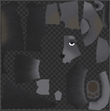
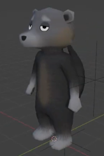
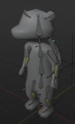
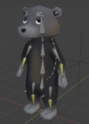
It took some time to finish this character but by the end of it, I had adopted a workflow that I could apply to the next characters I would create.
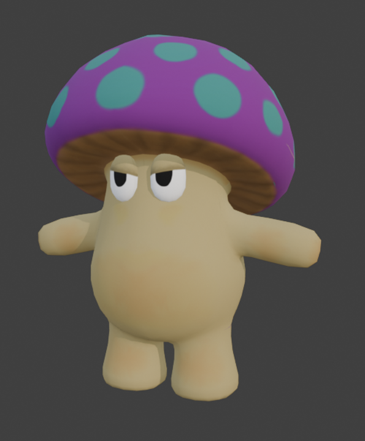
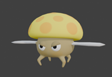
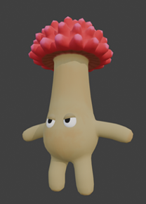
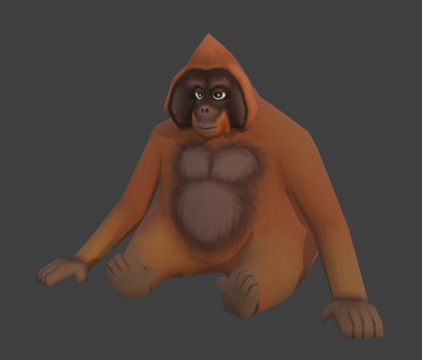
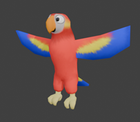
Character Rigging & Animating Workflow
As an example, I will go through my workflow when creating Gale, the parrot character in our game.
Here I start by creating bones for the character model. I build them off of each other and I parent the limb bones to the torso and waist so they move the rest of the body.
I always ensure my bone hierarchy starts from the waist and extends to the head, branching off from other points when extra limbs are added.
One more important thing is naming conventions, I only create and name one half of the body's bones and end the name with ".L", as I am able to mirror it later, automatically changing the ".L" to ".R".
Armature Half
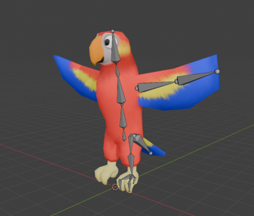
Parenting Bones
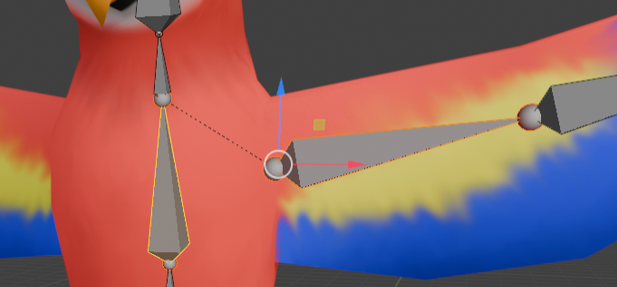
Inverse Kinematics
Next, I create the controls for my character, which will help me when I animate the character.
I start with Inverse Kinematics for the arms and legs. This will let me, for example, move the whole leg when I move just the foot.
I set restraints to limit the amount of bones that move along with the ankle.
Armature Half
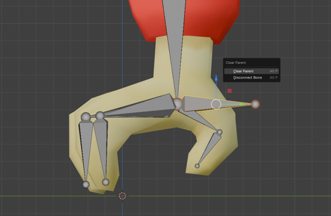
Parenting Bones
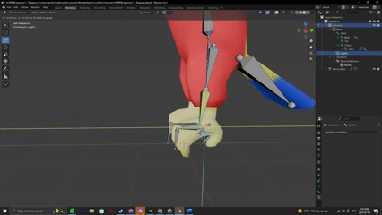
Pole Targets
The next thing is use is Pole Targets. This affects which way a limb will bend and will offer additional support for posing. It will act as a target for the Inverse Kinematics.
You also may see the bone hierarchy on one of the images below. You can see an example of what the naming convention looks like.
Pole Target
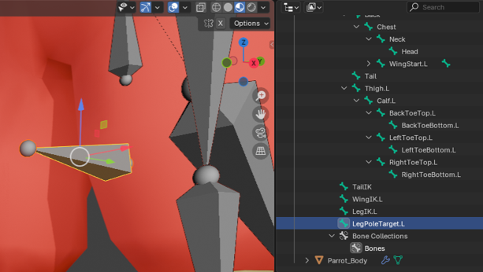
Pole Target Demo
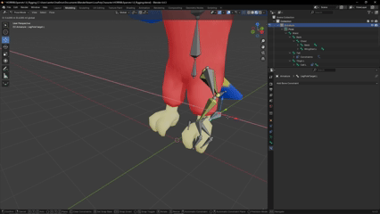
Automatic Weights
Once everything is done on one side of the body, it can be mirrored. Next, the finished armature can be combined with the mesh by using automatic weight.
You can see now that when a limb is moved the mesh moves with it, but something doesn't look quite right.
Mirrored Armature
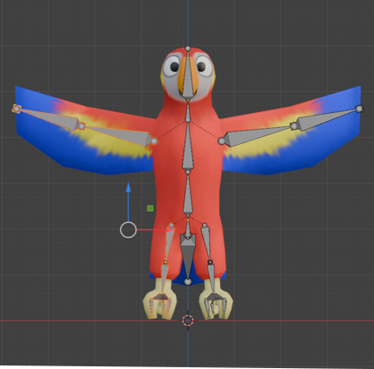
Automatic Weights
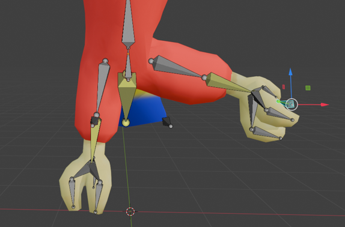
Weight Painting
The automatic weights do a decent job, but there are still many tweaks I need to do myself.
In the image below, I am in the weight painting mode. Depending on the selected bone, the colours show how much the mesh will move when the specific bone moves.
The closer to dark blue, the less the mesh is affected by the bone moving and the closer to bright red, the more it is affected.
Once the weight painting is finished and everything is moving properly, I can start animating!
Chest Weight Paint
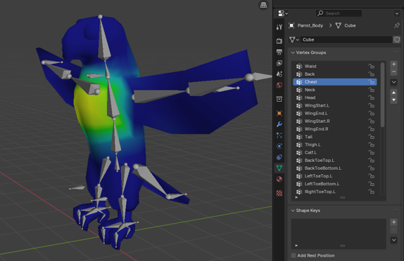
Finished Weight Painting Demo
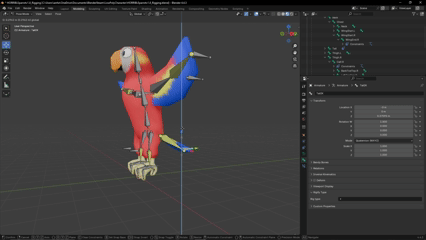
Full Body Movement Demo
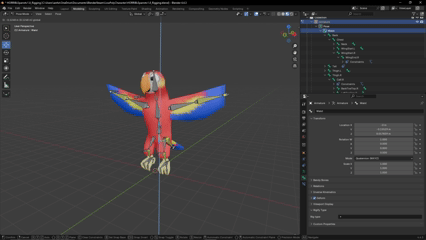
Final Animations
I won't get too deep into the process of animating, but it has been made much easier because of Inverse Kinematics and Pull Targets.
Standing Idle Animation
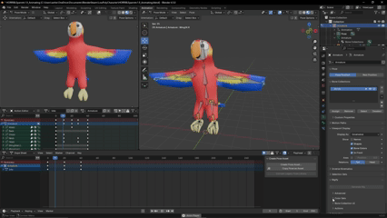
Waving Animation
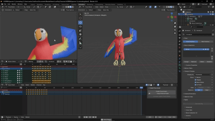
Flying Animation
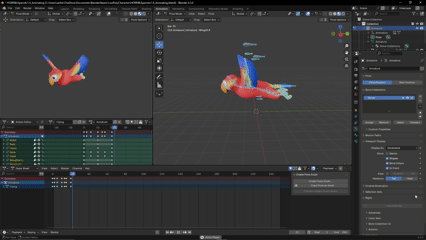
Idle Flying Animation
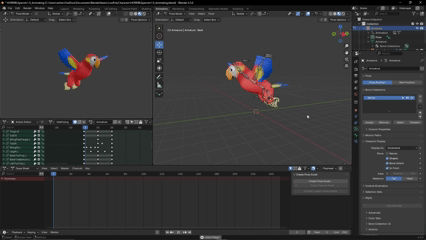